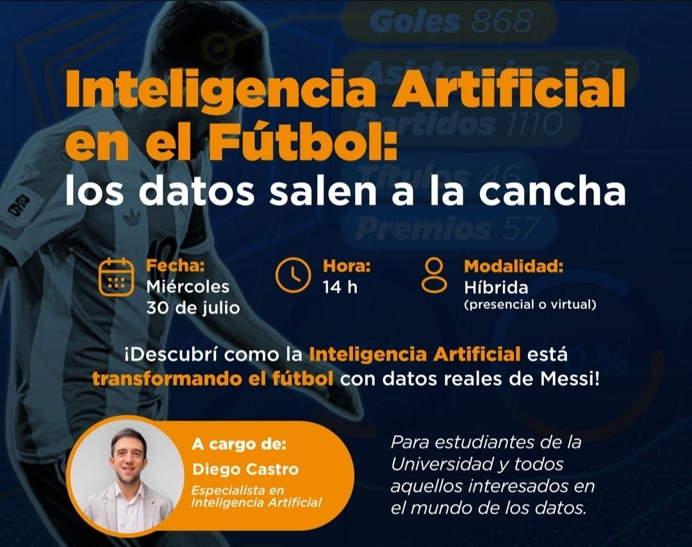
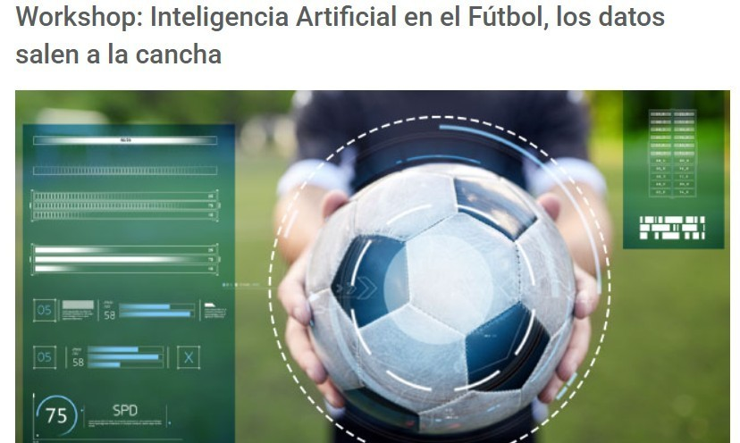
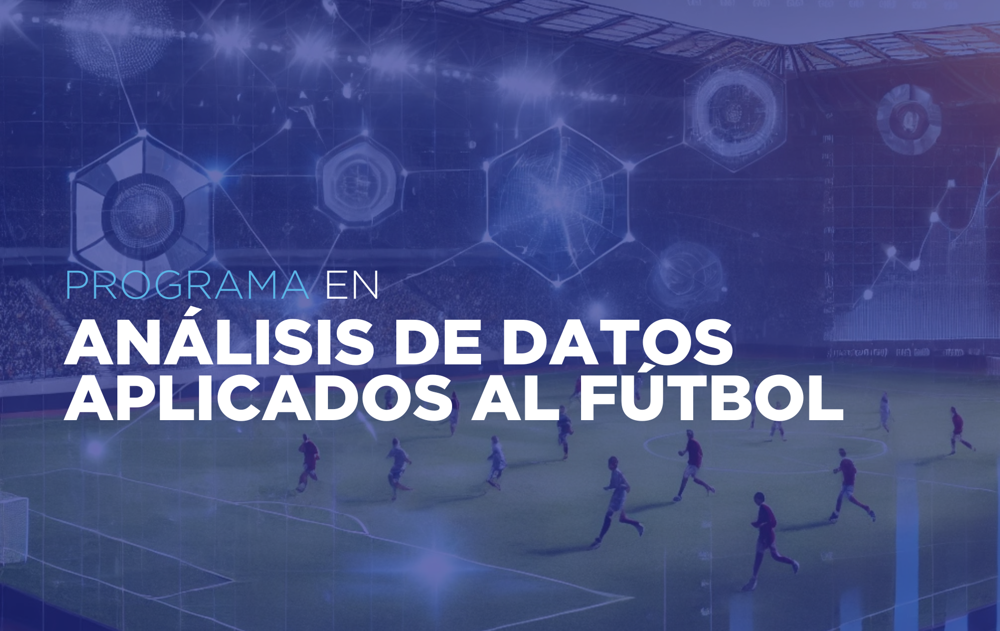
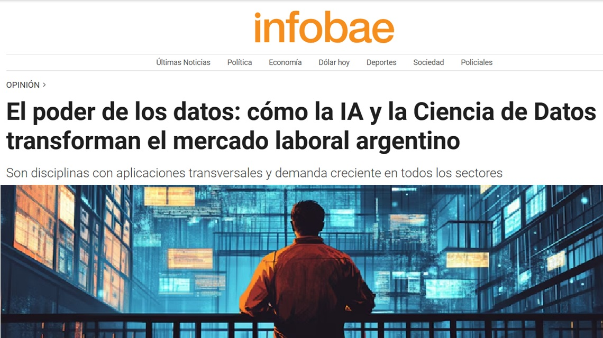
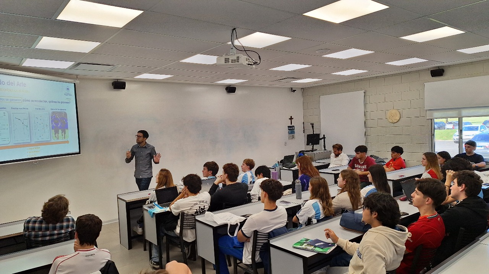
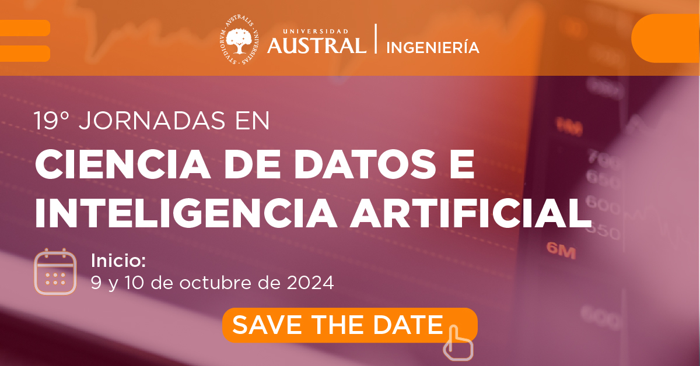
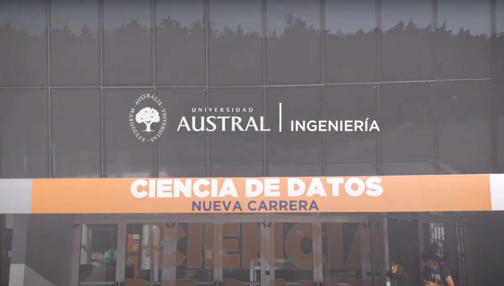
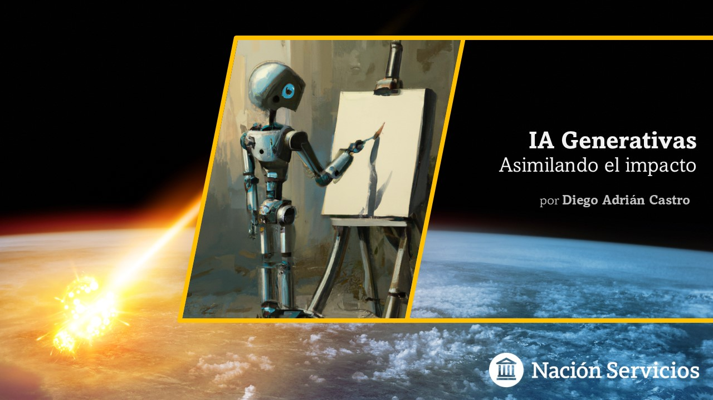

Resumen de las últimas participaciones
Temáticas Abordadas
Data & Analytics - Inteligencia Artificial (IA) - IA en el Fútbol (Football Analytics) - Divulgación IA para Perfiles No Técnicos - Smart Cities (foco en Transporte)
Actividad Executive AI Forum
Charla Deportes y Mundial 2026: La Inteligencia Artificial también juega su partido para el Executive AI Forum (grupo de académicos de IA de Argentina, Chile y Colombia) - Abril 2026

Entrevista Canal YouTube de Hugo Balassone
Nota realizada por el reconocido periodista deportivo de TyC Sports y radio La Red sobre el uso de Datos en el fútbol - Agosto 2025

Messi + IA (Univ. Austral - Rosario)
Workshop para alumnos de escuela secundaria y seminario para estudiantes de grado sobre cómo se puede aplicar la Inteligencia Artificial al Fútbol, con foco en la biografía en datos de Lionel Messi - Julio 2025

Workshop: IA en el Fútbol - Universidad de Palermo
Charla para la Facultad de Negocios de Universidad de Palermo y MBA - Maestría en Dirección de Empresas sobre las tendencias que están impactando en el futuro del juego y los aportes que estas tecnologías pueden hacer en los procesos de innovación dentro del deporte - Julio 2025

Programa en Análisis de Datos Aplicados al Fútbol (Univ. Austral)
Clase sobre Introducción al Análisis de Datos - Hasta dónde podemos llegar - Mayo 2025

Nota Infobae: El poder de los datos
Mención en la nota de Infobae El poder de los datos: cómo la IA y la Ciencia de Datos transforman el mercado laboral argentino (por Débora Chan) - Mayo 2025

Taller de Resolución de Problemas I (Ciencia de Datos - Univ. Austral - Pilar)
Clase para la carrera de grado de Ciencia de Datos (Univ. Austral) sobre IA en el Fútbol: Los datos de Messi salen a la cancha - Abril 2025

19° Jornadas en Ciencia de Datos e IA (Univ. Austral)
Presentación de mi tesis IA en el Fútbol: Los datos salen a la cancha - Octubre 2024
Ateneo Seguridad y Protección de Datos
Palabras de Apertura en Ciclo Organizado por CID (Centro Interinstitucional de Ciencia de Datos - Ministerio Ciencia y Tecnología) - Agosto 2023

Promoción Nueva Carrera Ciencia de Datos (Univ. Austral)
Lanzamiento de la nueva carrera de grado Licenciatura en Ciencia de Datos (Facultad de Ingeniería - Universidad Austral) - Julio 2023

IA Generativas: Asimilando el Impacto (Alta Dirección)
Espacio orientado a presentar nuevos conceptos de IA Generativa a la Alta Dirección de la empresa Nación Servicios - Junio 2023
Boletín Conectados: Departamento Computación
Entrevista para el Boletín Conectados (Departamento Computación - Facultad Exactas - UBA) - Marzo 2023
Otras Presentaciones
| Fecha | Evento | Descripción |
|---|---|---|
| Agosto 2024 | IA aplicada al Fútbol (Instituto Obras) | Presentación de mi proyecto de investigación relacionado a IA aplicada al Fútbol para alumnos del Profesorado de Educación Física del Instituto Obras (Materia: Investigación del Prof. Darío Gaiardo) Ver más |
| Mayo 2023 | Presentación Inteligencia Artificial: Asimilando el Impacto | Capacitación Interna orientada a toda la empresa Nación Servicios sobre IA Ver más |
| Octubre 2022 | Conferencia Tarjeta SUBE: Datos con impacto en la vida real | Simposio Argentino de Ciencia de Datos y GRANdes DAtos (AGRANDA - JAIIO N°51) |
| Octubre 2022 | Master Class ¿Qué hacemos con los datos? (UNTREF) | Expo Semanal CUCH-Universidad Tres de Febrero |
| Septiembre 2022 | ¿Qué hacemos los de Datos? | Capacitación interna para toda la empresa Nación Servicios |
| Junio 2014 | Sistema SUBE | Semana de la Computación - Facultad de Exactas - UBA |
| Diciembre 2009 | Concurso de Posters de Inteligencia Computacional - IEEE | “Image Retrieval Based on Text and Visual Content Using Neural Networks” - EVIC 2009 - Santiago, Chile |